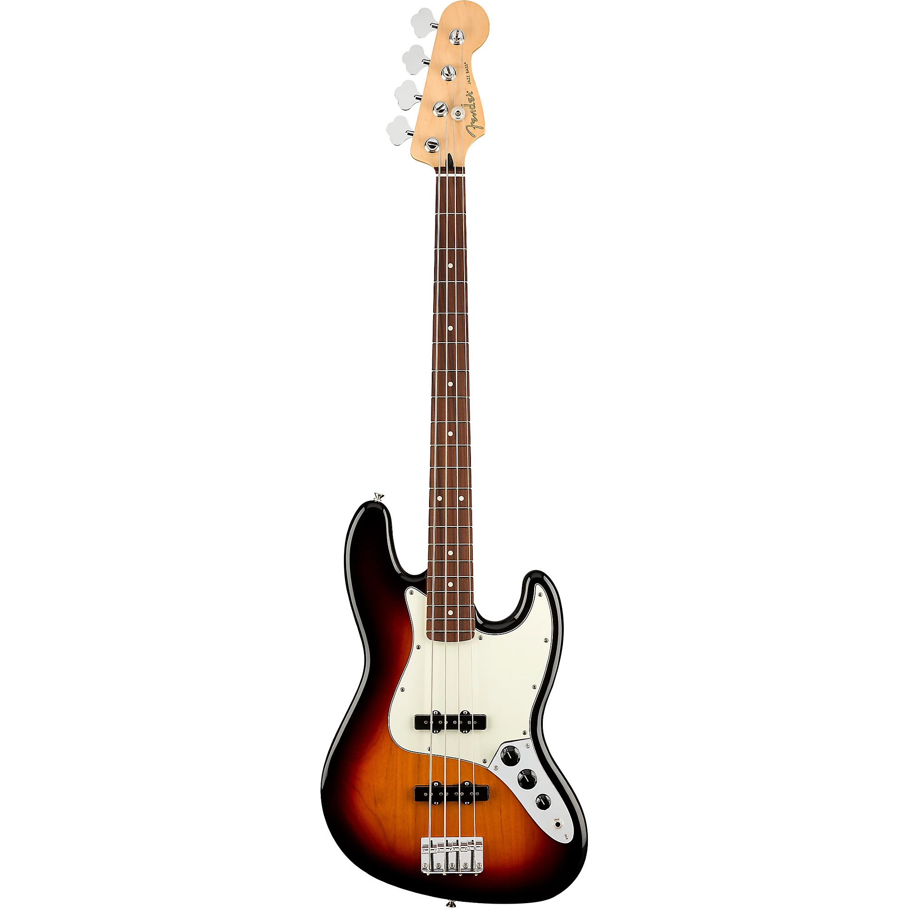
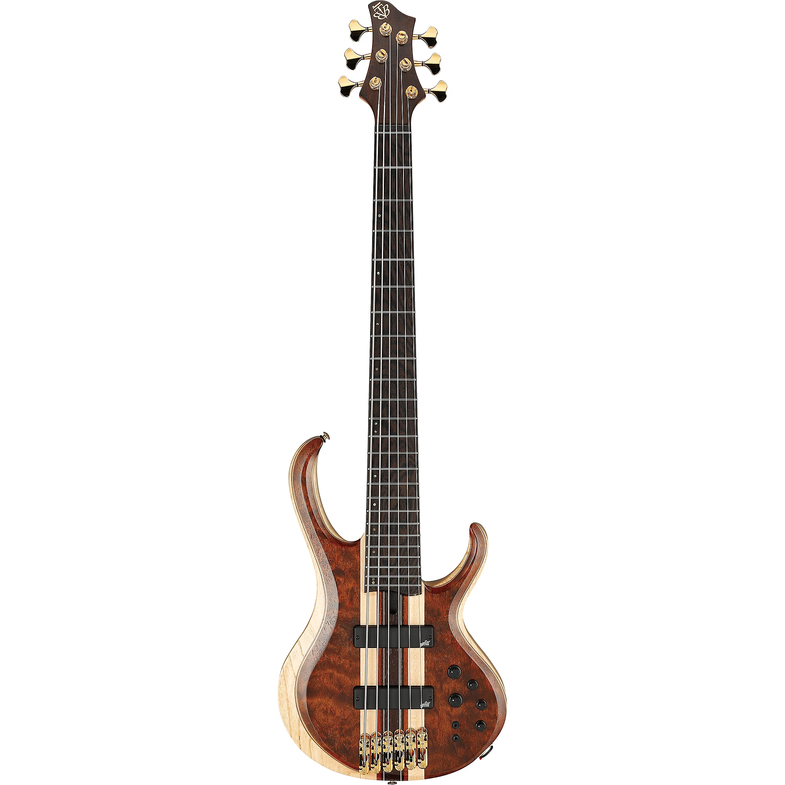
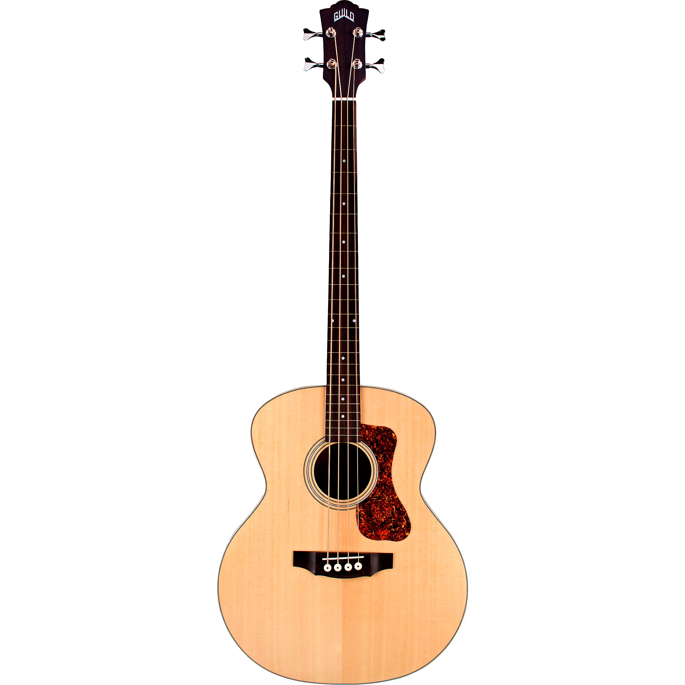

Discover Your Perfect Bass Guitar
Whether you’re a seasoned musician or a beginner, choosing the right bass guitar can elevate your music to new heights. Dive into our comprehensive guide to the different types of bass guitars and find the one that best suits your style.
4-String Bass Guitars
The 4-string bass is the most traditional and widely used type of electric bass guitar. With its standard tuning of E1, A1, D2, and G2, it offers a familiar range that suits a multitude of musical styles. These instruments are perfect for rock, pop, jazz, and blues. Their balanced neck and range make them accessible for players of all skill levels.
Popular Models
- Fender Precision Bass
- Fender Jass Bass
- Ibanez SR Series
Extended Range Bass Guitars
Expanding the traditional range, 5 and 6 basses add a low B string and high C string respectivly, extending the instrument’s lower range and providing extra tonal options. These instruments are ideal for genres that require deeper or higher tones like jazz, metal, and progressive music. They also allow for more complex fingerings and chord progressions.
Popular Models
- Music Man Stingray 5
- Ibanez BTB6
- Conklin Groovetool
Acoustic Bass Guitars
Acoustic bass guitars are ideal for those who prefer a more natural sound without amplification. They are especially popular in unplugged or acoustic settings. One important thing to remember about acoustic bass guitars is that they are much quieter than regular acoustic guitars. If you are interested in playing with a group, you may want to consider finding an acousitc bass that includes a way to amplify it.
Popular Models
- Guild B-240E
- Ibanez AEB Series
- Fender California Kingman Acoustic-Electric